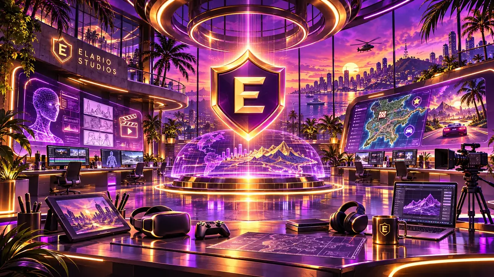

MAP DESTINATIONGTA V StoryLos Santos / Blaine County · interactive explorerInspect the real page ›
MAP DESTINATIONGTA V StoryLos Santos / Blaine County · interactive explorerInspect the real page ›01 / FOUR FLAGSHIP WORLDS
Game-specific map covers
Premium imagery identifies each destination; opening a card goes to the real interactive or schematic world rather than a static mockup.
MAP DESTINATIONGTA V StoryLos Santos / Blaine County · interactive explorerInspect the real page › MAP DESTINATIONGTA OnlineLos Santos Online · separate markers and progressInspect the real page ›
MAP DESTINATIONGTA OnlineLos Santos Online · separate markers and progressInspect the real page › MAP DESTINATIONGTA VI · LeonidaVice City / Leonida · provisional researchInspect the real page ›
MAP DESTINATIONGTA VI · LeonidaVice City / Leonida · provisional researchInspect the real page › MAP DESTINATIONCayo PericoIsland heist planning · schematic researchInspect the real page ›
MAP DESTINATIONCayo PericoIsland heist planning · schematic researchInspect the real page ›02 / UNIQUE DESTINATION HEROES
Actual site sections
 SUBJECT-SPECIFIC HEROCharacters of GTACharacter archive: game-by-game profilesInspect the real page ›
SUBJECT-SPECIFIC HEROCharacters of GTACharacter archive: game-by-game profilesInspect the real page › SUBJECT-SPECIFIC HEROHeist HQMission planners, checklists and researchInspect the real page ›
SUBJECT-SPECIFIC HEROHeist HQMission planners, checklists and researchInspect the real page ›
SUBJECT-SPECIFIC HEROElario StudiosThe creative technology and studio experienceInspect the real page ›03 / DEVICE CHECK
Tap the actual map zoom controls
The GTA V, GTA Online and Leonida map pages now include separate + / − / FIT controls designed to avoid the former overlapping map navigation. Check each on your iPhone and switch 2D/3D where available.
04 / APPROVAL GATE
What is still unfinished
The nine classic GTA destination covers, individual cinematic imagery for all fifteen heist pages, subject-specific weapons and vehicles, full map/3D feature parity and final browser screenshots remain outstanding. This staging page does not certify those as complete.
GTA VI imagery is original provisional fan concept art, not a confirmation of unreleased in-game locations. Game titles are identifiers only; Rockstar Games and Take-Two Interactive own their respective intellectual property.
Sources & attribution ›